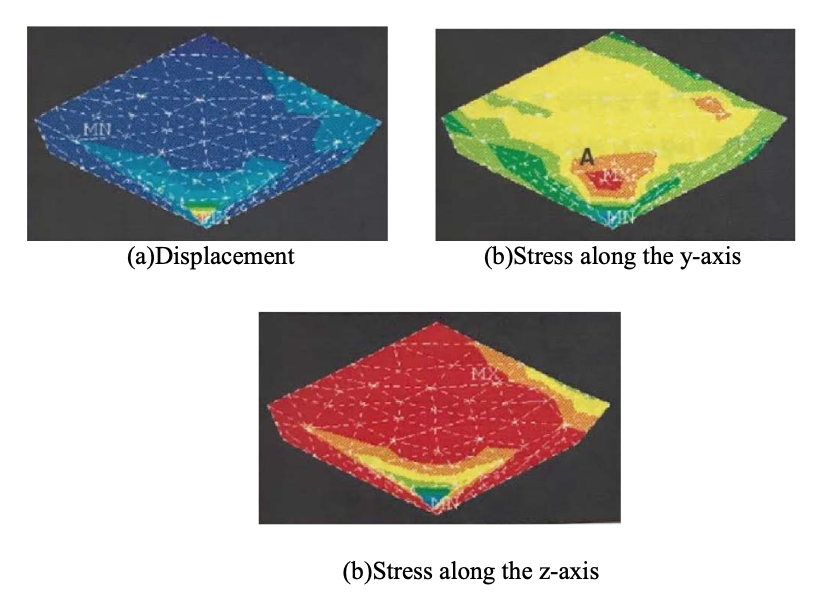

Abstract: The research attempts to predict the change in
the size distribution of the particles after the milling
process. The data for the research was sourced from
https://www.innocentive.com/. It consisted of pre and
post-milling data of the size distributions of the particles.
This research made two assumptions: the distribution of
particle sizes can be described by combining several
individual normal distribution graphs with different
parameters. Curve fitting was used to find out the best
fitting parameters of the component normal distribution
functions. We also assumed that the formula for
predicting post-milling distribution from pre-milling
distribution is linear, i.e., a matrix operation on the pre-
milling parameters will predict the post-milling one. A
single matrix should be able to convert all 26 datasets.
However, only 25 of the datasets were used in order to test
the remaining one for cross-validation. Four normal
distributions were determined to be optimal for
describing the particle size distribution in the data. The
prediction had a sum of squared errors ratio ranging from
4.95% to 31.2%, with the average value of 18.7%, which
shows the potential of this approach. With more data, or
with an ability to conduct the experiment, higher and
more consistent particle size predictions should be within
reach.
